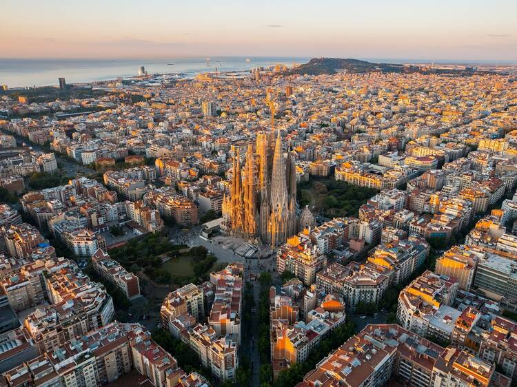
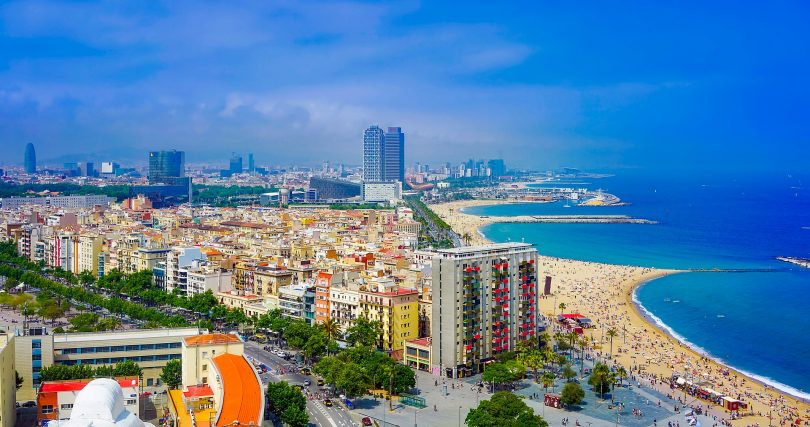
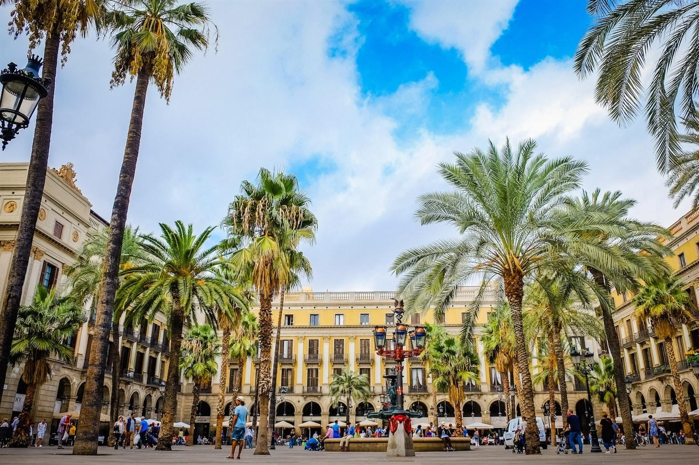

Barcelona Stadsoverzicht
Barcelona is de bruisende hoofdstad van Catalonië en een van de meest iconische steden in Spanje. Bekend om zijn architectuur, stranden en rijke cultuur, trekt de stad jaarlijks miljoenen toeristen van over de hele wereld.

Basisinformatie
- Ligging: Noordoost Spanje, aan de Middellandse Zee
- Bevolking: Ongeveer 1.6 miljoen mensen
- Oprichtingsjaar: 1e eeuw v.Chr.
- Taakgebied: Catalonië
- Klimaat: Mediterraan klimaat, warme zomers en milde winters
Bezienswaardigheden in Barcelona
- La Sagrada Familia – Antoni Gaudí’s onvoltooide meesterwerk.
- Park Güell – Een kleurrijk park met uitzicht over de stad.
- De Ramblas – De beroemde wandelstraat vol winkels en straatartiesten.
- Het Picasso Museum – Een van de grootste collecties van werk van Picasso.
- Het Camp Nou – Het iconische stadion van FC Barcelona.
Lokale Activiteiten in Barcelona
Fietstour door de stad
Verken de stad op een comfortabele fiets en ontdek de verborgen pareltjes van Barcelona.
Strandactiviteiten
Geniet van de zon op de prachtige stranden van Barcelona, ideaal voor zwemmen, zonnebaden en beachvolleybal.
Flamenco Show
Beleef de passie van de Spaanse cultuur tijdens een live flamenco-optreden in het hart van de stad.
Winkelen en Nachtleven in Barcelona
Winkelstraten
Barcelona heeft enkele van de beste winkelstraten in Europa, van high-end mode in de Passeig de Gràcia tot lokale markten zoals de Mercat de Sant Josep de la Boqueria.
Nachtclubs en bars
Het nachtleven in Barcelona is beroemd. Van chique rooftop bars tot energieke nachtclubs, er is voor ieder wat wils.